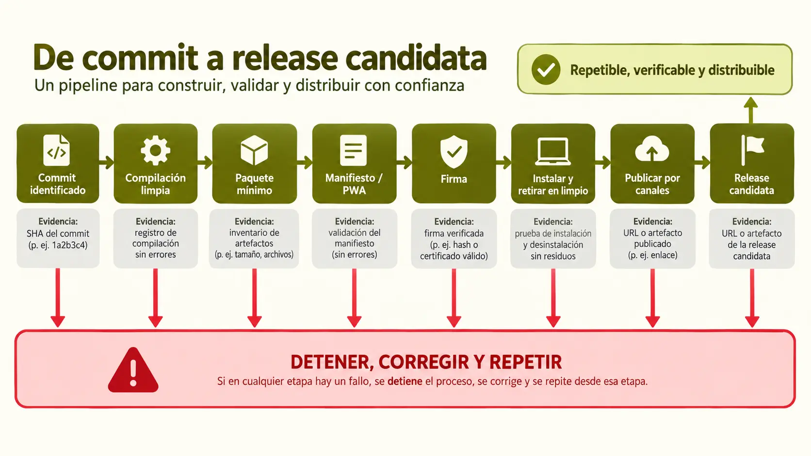

Contenido de la página
Situación
El gestor ya ha sido probado y documentado. El centro necesita una versión que pueda instalarse, verificarse, actualizarse y retirarse sin depender del equipo que la creó.

Encargo
Prepara una versión candidata web/PWA. Parte de diseños, manifiestos y listas de comprobación generados con Stitch, Gemini y Google AI Studio; elimina supuestos falsos, usa las interfaces de publicación y conserva evidencia real.
Requisitos obligatorios
- Inventario de componentes, versiones, licencias y exclusiones del paquete.
- Versión web identificada, exportable y PWA instalable.
- Generación desde el editor con IA y desde la interfaz web del repositorio.
- Experiencia de instalación personalizada con M3, idioma, cancelación y error.
- Firma digital del artefacto y verificación positiva y negativa.
- Actualización automatizada, con registro visual y bloqueo seguro ante fallos.
- Pruebas de instalación, actualización y desinstalación, incluidos datos locales.
- Plan de Pages, Release y un canal restringido, con retirada y actualización.
Entregables
- Ficha de versión, commit y entorno.
- Manifiesto de componentes y licencias.
- Artefacto, hash, firma e instrucciones de verificación.
- Configuración del editor y flujo externo visual anotados.
- Prototipo Stitch y textos definitivos del asistente.
- Registros visuales del ciclo limpio y actualización automatizada.
- Matriz canal–audiencia–versión–actualización–retirada.
- Registro de correcciones a la salida de IA y defensa individual.
Casos de prueba mínimos
| Caso | Resultado esperado |
|---|---|
| Publicación limpia | Produce la versión identificada sin borradores ni secretos |
| Instalación PWA | La aplicación queda instalada desde un perfil limpio |
| Firma original | La verificación identifica el artefacto como íntegro |
| Copia alterada | La verificación falla de forma visible |
| Actualización automática | Publica sin pasos ocultos, conserva registro y bloquea los fallos |
| Actualización | Mantiene la versión esperada y declara qué ocurre con los datos |
| Desinstalación | Retira aplicación y caché según la política documentada |
| Canal alternativo | Define audiencia, actualización y retirada, no solo una URL |
Guía de corrección por criterios
| CE | Satisfactorio | Insuficiente |
|---|---|---|
| a | Paquete contiene solo componentes requeridos y trazados | Copia la carpeta de trabajo |
| b | Asistente personalizado, claro y accesible | Cambia solo un logotipo |
| c | El editor genera una versión verificable | Captura sin versión accesible |
| d | La interfaz externa reproduce la salida | Depende de pasos ocultos |
| e | Firma original válida y copia alterada inválida | Presenta solo un hash |
| f | Automatización visible y bloqueo seguro | Requiere pasos manuales ocultos |
| g | Retirada comprobada y datos explicados | Confunde cerrar con desinstalar |
| h | Canales tienen audiencia y ciclo de versión | Enumera canales sin estrategia |
Solución docente orientativa
Mostrar estructura de una solución válida
La versión 1.0.0-rc.1 parte de una revisión identificada y se publica sin secretos. El editor con IA y la interfaz web del repositorio usan la misma fuente. El manifiesto permite instalar la PWA; Stitch muestra estados accesibles. La versión exportada se firma mediante una interfaz didáctica y la copia modificada falla al verificarse. La automatización bloquea la publicación si falla una validación. El ciclo en perfil limpio registra instalación, actualización, desinstalación y estado de datos. Pages es el canal principal, Releases conserva versiones y ad-hoc limita el piloto; cada canal define retirada.
Preguntas de defensa
- ¿Qué archivos excluiste del paquete y por qué?
- ¿Cómo demuestras que las dos rutas de generación producen el mismo artefacto?
- ¿Qué diferencia existe entre hash y firma digital?
- ¿Qué ocurre con los datos después de actualizar y desinstalar?
- ¿Por qué elegiste cada canal y cómo retirarías una versión defectuosa?